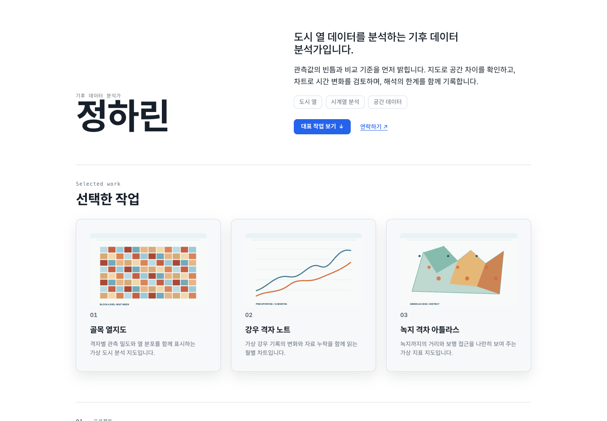
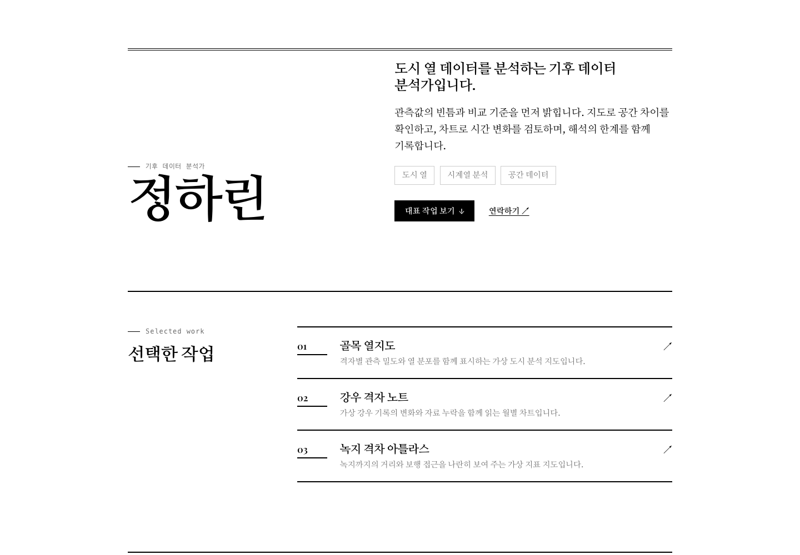
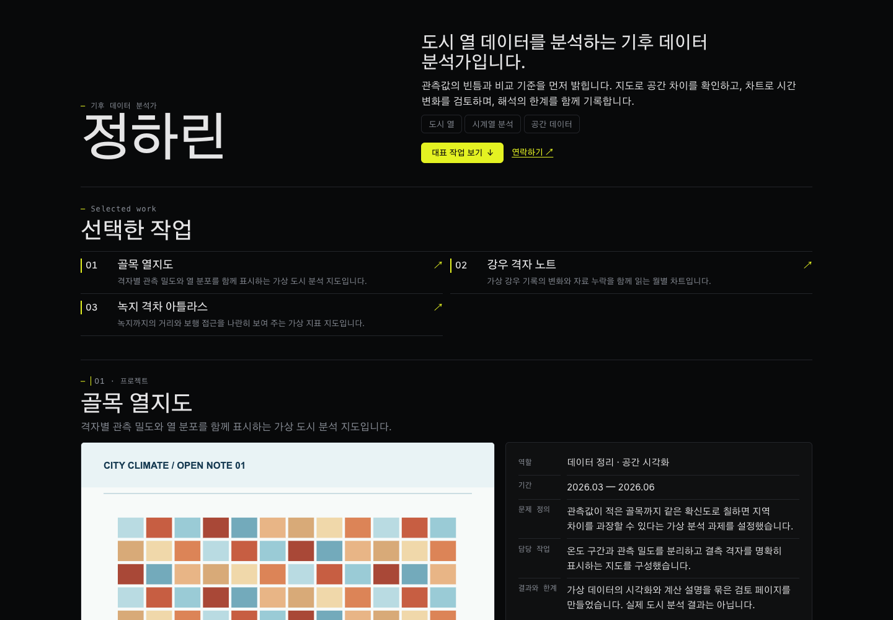
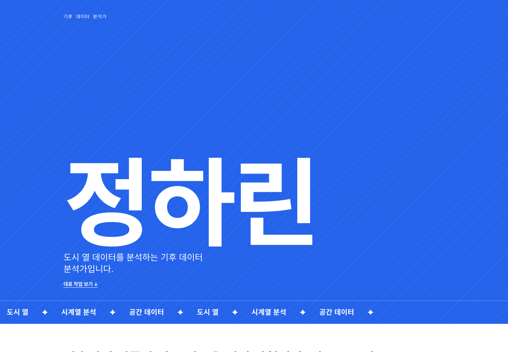
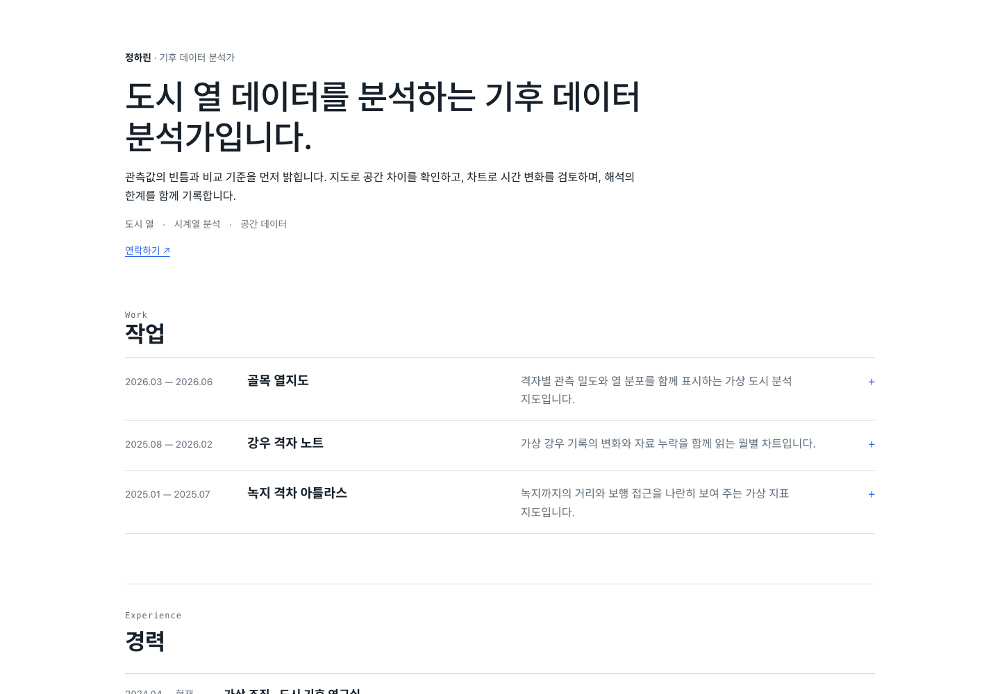

지난 2주 개발 진행 내역
2026-10-15 — 10-28
2주 개발 규모
출처: git log · gh pr (origin/main). 코드 변경은 services · packages 기준, 이미지 · 마크다운 제외.
목차
포트폴리오 생성
배포와 분석
커리어 기록
공고와 에이전트
계정과 요금제
AI 모델과 개발 프로세스
포트폴리오 생성 흐름
레시피 단계 제거 · 제작 흐름 5단계 · PR #128
생성 시간 · 비용 실측
출처: PR #128 · #126 본문의 체험 서버 실행 기록. 청사진은 29.8–40.4초 범위.
디자인 시스템 적용



출처: docs/library/previews/portfolio/runs/design-layout-2026-10-20 · 가상 프로필 렌더 · PR #98 · #99
포트폴리오 유형



출처: design-layout-2026-10-20 · archetype-poster / archetype-list-2026-10-24 렌더 (Clarity).
첫 화면 배경과 장면
three.js 0.186.1 · PR #135 · #139
차트 부품
가로 막대 차트
작업 기간 차트
경력 기간 차트
구조 모식도 · PR #143
다듬기 화면
구성도 · PR #138
배포와 방문 분석
마이그레이션 0023 · PR #133 · #142
커리어 본문 편집기
검증 보고서: docs/architecture/career-editor-blocknote-spike.md · PR #137 · #132 · #145
커리어 카테고리 소유
마이그레이션 0017 · 가입 트랜잭션에서 기본 7종 생성 · 옛 속성 정의(v1) 이관 후 삭제 · PR #105
공고 상세 에이전트 채팅
구성도 · PR #77 – #84 · #88 · #91
화면 연결 현황
요금제와 크레딧
출처: 화면 정의서 「요금제 · 사용량」 · 마이그레이션 0022 · 생성 40건 평균에서 크기 결정 · PR #130
관리자 화면과 더미 계정
마이그레이션 0024 · PR #136
적합도 모델 학습 파이프라인
codex/p5-data-collection 을 main 에 병합 · PR #119
파일럿 학습 결과
출처: docs/p5-model-training-results-2026-09-06.html · 정답은 LLM 교사 점수
개발 진행 현황 대시보드
도메인별 진척 · 팀원별 할 일 · 작업 범위 · 분량 다이어그램 · PR #103 · #106 · #108
개발 프로세스 지표
출처: git log (병합 제외 406개) · 테스트 수는 PR #130 본문
한 경로로 이어졌습니다.